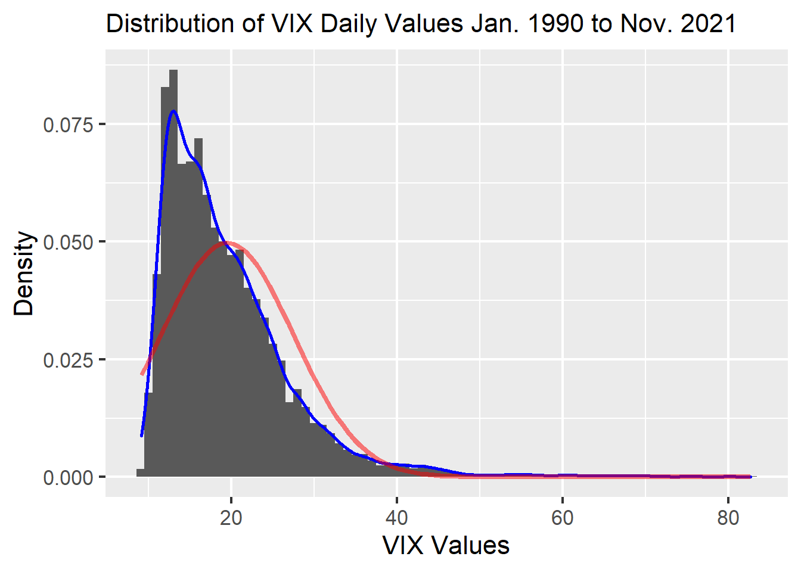

Chapter 2 Data sources
2.1 VIX data
Cboe Global Markets, Inc. (Cboe) provides the daily VIX data (VIX_History.csv) in its website, https://www.cboe.com/tradable_products/vix/vix_historical_data/. It is created to reflect investors’ view of future expected stock market volatility, market’s “fear gauge.” Cboe Options Exchange makes the VIX index by S&P 500 index options. Options, ones of the financial derivatives, are the financial products which give buyers the right to buy or sell the underlying financial asset. Since the price of the options are adjusted by traders’ forecasts about the underlying asset, which is S&P 500 in the case of S&P 500 index options, it includes the information about volatility of their forecasts.
Though there are lots of data referred as “fear index,” such as the VXN index for NASDAQ, the VSTOXX index, the VDAX index, and the VSMI Volatility index for Europe, and the Asian VXJ index for Japan, we chose VIX because it is one of the most famous volatility indices.
VIX_History.csv has the following data of 8038 records from Jan. 2, 1990 to Nov. 30, 2021 at Dec. 1, 2021. We will analyze the VIX value in the Close column because the other data is made based on the values when the market is close.
Table 2.1: VIX data columns
| Column Name | Description |
|---|---|
| Date | The date of the VIX value (date) |
| Open | The VIX value when the market is open (num) |
| High | The highest VIX value on the date (num) |
| Low | The lowest VIX value on the date (num) |
| Close | The VIX value when the market is close (num) |
Issues with this dataset:
-The data format is clean and must be exactly calculated based on the accurate S&P 500 data because Cboe is the largest U.S. options exchange market. So, we do not have any problem about the data from this perspective.
-The VIX only has the information based on S&P 500. The limited traders in the world would check it. However, this is one of the points we want to analyze on this final project.
The distribution of the VIX Close value:
In the graph below, the blue curve is a density curve of the data and the red curve is the density curve of normal distribution with the same mean and the same standard deviation. We can see the data is far from normally distributed with a rather extreme right skew, suggesting traders regarded that the market is not in financial crisis in the most periods.

- Stock indices data we took from the Fama-French website https://mba.tuck.dartmouth.edu/pages/faculty/ken.french/data_library.html this is a well known dataset that has been used by many academics for asset pricing tests, not least the original Journal of Finance paper https://onlinelibrary.wiley.com/doi/10.1111/j.1540-6261.1992.tb04398.x
This provides a rich dataset of daily data for which we can calculate our returns on, the data library includes returns on factors (which can be thought of as important risk characteristics (or covariances) of stock price movements) and various other portfolios such as sectors.
Data collection
In this section we get the data and process it a little - giving the dates consistent format and converting variable types.
## Rows: 50,213
## Columns: 12
## $ X <dbl> 19260701, 19260702, 19260706, 19260707, 19260708, 19260709, 1926~
## $ NoDur <dbl> 0.02, 0.29, 0.24, 0.27, 0.69, -0.39, 0.67, 0.27, -0.46, -0.36, 0~
## $ Durbl <dbl> -0.28, 1.07, 0.72, 0.06, 0.05, -1.15, 1.23, 0.78, 1.92, 0.65, -0~
## $ Manuf <dbl> -0.23, 0.81, 0.22, 0.23, 0.15, -1.10, 0.78, 0.25, 0.74, 0.37, -0~
## $ Enrgy <dbl> 0.57, 0.64, 0.17, -0.04, 0.12, -1.60, 0.65, -1.27, 0.37, -0.54, ~
## $ HiTec <dbl> -0.21, 0.36, 0.47, -0.10, 0.35, -0.73, 0.39, 0.03, 1.64, 0.95, -~
## $ Telcm <dbl> -0.02, 0.26, 0.17, 0.32, 0.40, 0.21, 0.07, 0.15, 0.03, -0.01, -0~
## $ Shops <dbl> -0.01, 0.01, -0.23, -0.58, -0.36, 0.40, 0.52, 0.27, 0.32, 0.25, ~
## $ Hlth <dbl> 0.97, 0.13, 0.23, 0.33, 0.91, -0.28, -0.17, 0.22, 0.57, 0.09, -0~
## $ Utils <dbl> 0.61, 0.47, 0.73, 0.17, -0.20, -0.74, 0.55, 0.23, 0.20, 0.52, -0~
## $ Other <dbl> 0.20, 0.10, -0.18, 0.16, 0.39, -0.25, 0.55, 0.37, 0.28, -0.23, -~
## $ DATE <date> 1926-07-01, 1926-07-02, 1926-07-06, 1926-07-07, 1926-07-08, 192~##
## Shapiro-Wilk normality test
##
## data: tail(df1$Mkt.RF, -5000)
## W = 0.881, p-value < 2.2e-16The data on the overall market also a distribution quite different from normal - in this case the qqplot clearly shows much fatter tails than expected. The result is confirmed with a Shapiro-Wilk test which comfortably rejects the null hypothesis of normality.